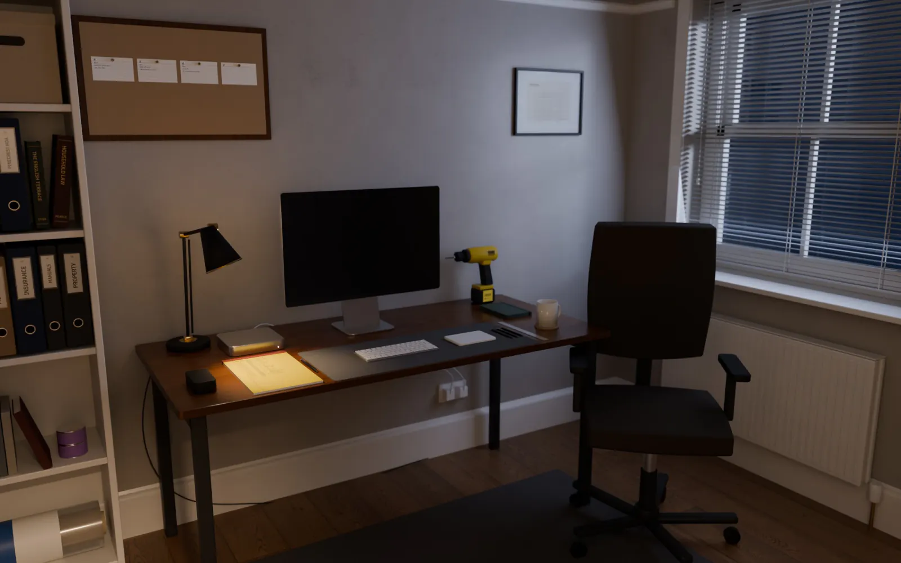
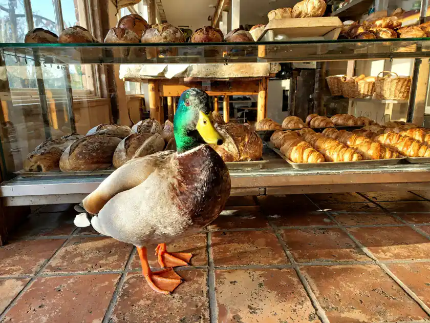
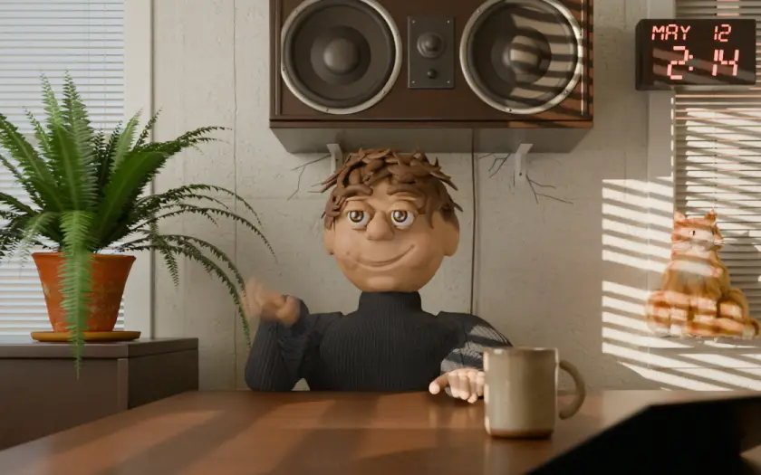

Click Record in Hex, transcribe on your Mac, and hand it straight to OpenCode.
Q4 syncREC5
hex/New session
Hex meeting prompt · q4-syncAsk anything, / for commands, @ for context...
BuildAnthropic /Claude OpusAuto-approve
SlackSpacemanLocal Duck Refuses…Home / X
app.slack.com/client/anomaly/general
#generalShipping, banter, and meetings that could have been a message24
Today
kit4:02 PM
hex meetings is live. please stop asking me to take notes
🚀 1213🫡 3
jay4:03 PM
if anyone books a 30 min sync that could have been a slack message i am punching them in the stomach
👊 11😬 4
jay4:04 PM
also has anyone actually seen greg since tuesday? he's merged 47 prs today
👀 8
greg fart4:04 PM
deep in a refactor right now, skipping standup, pr incoming
🫡 14🔥 6
dax4:05 PM
greg is carrying the whole org rn everyone else is slacking
💀 9
GitHubApp4:06 PM
anomalyco/opencode · dax merged delete code into dev+12−14,203
✅ 4👀 6
2 repliesLast reply today at 4:06 PM
aiden4:07 PM
pushed the hex menu bar fix, the timer no longer looks like braille
🙏 8🫡 5
dax4:07 PM
i liked the braille
🫠 7
kit4:09 PM
dictated this with hex lying face down on the carpet. not getting up
🎙️ 8🛌 4
aiden4:10 PM
knife now opens before i have finished deciding to open it
6
BIS
Message #general
Aa@
dax is typing…
Workspace deleted
“Anomaly” was permanently removed (0 seconds ago).
Create a new workspaceFind your workspaces
error: workspace_deleted

Spaceman
For your windows.
Spaceman is a tiling window manager for macOS. Every window side by side, nothing on top of anything else.
Download for macOSWatch the demo2 min
Version 0.3.3 · macOS 14 or later · Apple silicon
Every window has a place.
Windows open side by side and make room for each other. Ten numbered workspaces sit under your fingers, and rules send each app where it belongs.
Windows tile as they open
Each new window takes a share of the screen and the others make room. Drag a window onto another to swap them, or drag an edge to resize the split.
123
Ten workspaces on the keyboard
⌥1 to ⌥0 switch workspaces. Add ⇧ to send the focused window to one without following it. A small bar shows each workspace’s number and apps as you go.
AppWindow titleActionWorkspace
Chat“Standup”Ignore—
ChatAnyRoute2
MailAnyRoute2
BrowserAnyRoute3
Rules for where apps go
Send an app to a workspace when it opens, or leave a window alone by its title. Rules are checked in order and the first match wins.
Tabs keep their tile
Switch native tabs, in Ghostty for one, and the window keeps its tile, its size and its place in the layout.
1Pause Tiling
Your windows come back
Pausing, quitting or updating Spaceman brings every hidden window back where it was. It remembers where each one goes before it moves it.
Accessibility
Spaceman
Terminal
Script Editor
Accessibility, and nothing else
System Integrity Protection stays on. Window titles stay in memory: Spaceman never saves, logs or sends them, and nothing reports home.
Thursday, November 26, 2026Millbrook 54° · OvercastE-EditionNewslettersSign in
The Millbrook CourierSubscribe
LocalDowntown Millbrook
Local Duck Refuses to Leave Bakery
Regulars have started calling him Gerald.
By Tom AverillStaff writer · Updated 4:10 p.m.

Gerald holds his ground in front of the sourdough at Hartwell’s Bakery on Thursday. Dana Okafor / The Millbrook Courier
MILLBROOK — A mallard that walked into Hartwell’s Bakery on Tuesday morning has, as of press time, declined to leave.
“We’ve tried opening the door,” said owner June Hartwell, who has run the Main Street shop for 22 years. “He just looks at it.”
“He is not technically doing anything wrong.”— Animal Control
Croissant sales are up 30 percent since Tuesday, Hartwell said. She has not ruled out putting him on the sign.
UPDATE, 4:10 P.M. The duck is still there.
More in Local
Council delays vote on Main Street parking, again2 hours ago
Tallis Valley High marching band heads to state5 hours ago
Library extends Sunday hours through winterYesterday
Pond across from Main Street reports no ducksYesterday
For youFollowing
What’s happening?Post
dax@thdxr · 2h
stop having meetings just paste the transcript into opencode
2121.4K18K1.2M
jay@jayair · 1h
what if you turn auto-approve on
38962.1K204K
dax@thdxr · 1h
do not turn auto-approve on
5413.2K9,4129,4132.8M
B
Bay Area Dispatch@bayareadispatch · 3h
BREAKING: Star engineer Greg Fart found dead at desk, somehow shipped 412 PRs and made VP last week

2.6K31K214K14M
g
gerald watch@geraldwatch · 47m
local mallard still holding bakery hostage, day 3
MThe Millbrook Courier@millbrookcourier · Nov 24
Local Duck Refuses to Leave Bakery. Regulars have started calling him Gerald.
1.9K22K148K9.6M
OpenCode@opencode · 3h
we deleted 14k lines and it got faster. that is the changelog
874126.1K388K
kit@kitlangton · 4h
accidentally built a tiling window manager instead of answering my emails
641.1K12K710K
priya@priyainthecar · 12s
sorry was on mute. why am i inside marcus. cant reach the levae button
122034.4K96K
CORPUS_01.WAVUnus (Club Edit)
0:00
MarcusLead
MayaStaff Eng
PriyaOps
DavidDesign
Alexyou
Them
THU26
Q4 syncStarting now
Join
Q4 sync detectedNot nowRecord
00:00
Record
Stop
Copy agent promptCopied
Copy transcript
Hex meeting prompt · q4-sync
Meeting notesReady
Q4 sync
Attendees
You, Them (2 attendees)
Summary
CI reduced from 4.5 days to 0.4 s (tests removed).Jira, Slack and Linear retired. Priya joined from the car.Product and engineering consolidated (no beginning, no end).
Action items
David: quick question (carried over, owner unclear)Kill me (owner: Alex)